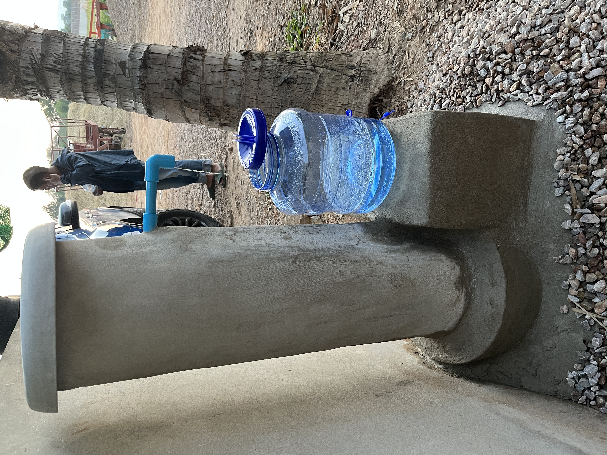

Build a locally sourced, sustainable water filter that removes 99% of bacteria and protozoa, and a 2–3 log removal of viruses. Lasts 10 years or more, and can be built almost anywhere for minimal cost ($20 USD).
สร้างตัวกรองน้ำที่ยั่งยืนจากวัสดุในท้องถิ่น ซึ่งกำจัดแบคทีเรียและโปรโตซัวได้ 99% และลดไวรัสได้ 2–3 log มีอายุการใช้งาน 10 ปีขึ้นไป และสร้างได้แทบทุกที่ด้วยต้นทุนต่ำ (ประมาณ 20 ดอลลาร์สหรัฐ)
ဒေသထွက်ပစ္စည်းများဖြင့် တည်ဆောက်နိုင်သော ရေသန့်စစ်ကိရိယာ — ဘက်တီးရီးယားနှင့် ပရိုတိုဇိုအာ ၉၉% ကို ဖယ်ရှားနိုင်ပြီး ဗိုင်းရပ်စ်ကို ၂–၃ log လျှော့ချနိုင်သည်။ ၁၀ နှစ်နှင့်အထက် ကြာရှည်ခံပြီး နေရာတိုင်းနီးပါးတွင် ကုန်ကျစရိတ်နည်းနည်း (ခန့်မှန်း ၂၀ ဒေါ်လာ) ဖြင့် တည်ဆောက်နိုင်သည်
用当地材料建造可持续的生物砂滤水器，可去除99%的细菌和原生动物，并对病毒实现2–3个对数级（log）去除。使用寿命10年以上，几乎可在任何地方以极低成本（约20美元）建造。
You cannot see, smell, or taste most waterborne pathogens. Water that looks perfectly clear can carry invisible killers — and in villages without clean water, these are the leading cause of sickness and death in young children.
คุณไม่สามารถมองเห็น ได้กลิ่น หรือลิ้มรสเชื้อโรคในน้ำส่วนใหญ่ได้ น้ำที่ดูใสสะอาดอาจมีฆาตกรที่มองไม่เห็น และในหมู่บ้านที่ไม่มีน้ำสะอาด สิ่งเหล่านี้คือสาเหตุหลักของการเจ็บป่วยและการเสียชีวิตในเด็กเล็ก
ရေတွင်ပါဝင်သော ရောဂါပိုးအများစုကို မြင်၊ နံ့ သို့မဟုတ် အရသာဖြင့် မသိနိုင်ပါ။ ကြည်လင်သောရေသည်လည်း မမြင်နိုင်သော ဘေးအန္တရာယ်များ ဆောင်ဆောင်နိုင်သည်။
您无法通过外观、气味或味道判断水是否安全。看似清澈的水也可能携带隐形杀手——对五岁以下儿童尤其危险。
When human or animal waste enters a water source, it carries bacteria, viruses, and parasites. Drinking even a small amount can infect the gut, causing diarrhea, vomiting, and dehydration that can kill a child within days.
A biosand filter built from local materials removes over 99% of bacteria and parasites from drinking water — no electricity, no chemicals, no moving parts.
เมื่อของเสียจากมนุษย์หรือสัตว์เข้าสู่แหล่งน้ำ มันจะนำ แบคทีเรีย ไวรัส และปรสิตมาด้วย การดื่มเพียงเล็กน้อยจะทำให้ลำไส้ติดเชื้อ ทำให้เกิดอาการท้องเสีย อาเจียน และขาดน้ำ ซึ่งอาจฆ่าเด็กได้ภายในไม่กี่วัน
ตัวกรองทรายชีวภาพจากวัสดุในท้องถิ่นสามารถกำจัดแบคทีเรียและปรสิตได้มากกว่า 99% จากน้ำดื่ม — ไม่มีไฟฟ้า ไม่มีสารเคมี ไม่มีชิ้นส่วนเคลื่อนที่
ဒေသတွင်းပစ္စည်းများဖြင့် ဇီဝသဲစစ်ဆေးကြောင်းသည် ဘက်တီးရီးယားနှင့် ပရာဆိုက်များ၏ ၉၉% ကျော်ကို ဖယ်ရှားနိုင်သည် — လျှပ်စစ်မလို၊ ဓာတုပစ္စည်းမလို
"许多人不得不走很远的路，或饮用已受污染的水源。" 这往往导致儿童无法上学，家庭将更多收入花费在药物上，或因可预防的疾病而数天无法工作。
用当地材料制作的生物砂滤器可去除饮用水中超过 99% 的细菌和病毒——无需电力、无需化学品、无活动部件。
No chemicals. No electricity. No moving parts. The filter works entirely through biology and physics — the same way nature cleans water in healthy soils and riverbeds.
The most important part is invisible — a thin living layer of microorganisms that forms naturally on top of the fine sand within 2–4 weeks. This biological film contains billions of beneficial bacteria and sticky proteins that physically trap and destroy pathogens.
✦ Good bacteria consume harmful E. coli, cholera, and other pathogens
✦ Sticky biofilm catches viruses and microscopic parasites
✦ Predatory microbes hunt pathogens before they can pass through
The filter must stay wet at all times. If it dries out, the biolayer dies and the 4-week start-up must begin again. Always keep at least 5cm of water above the sand surface.
ไม่มีสารเคมี ไม่มีไฟฟ้า ไม่มีชิ้นส่วนเคลื่อนที่ ตัวกรองทำงานผ่าน ชีววิทยาและฟิสิกส์ ล้วนๆ
ส่วนที่สำคัญที่สุดคือ ชั้นชีวภาพ — ชั้นบางๆ ของจุลินทรีย์มีชีวิตที่ก่อตัวตามธรรมชาติบนผิวทรายละเอียดภายใน 2–4 สัปดาห์ แบคทีเรียที่ดีจะกำจัดเชื้อโรค โปรตีนเหนียวจะดักจับไวรัส และจุลินทรีย์ล่าเหยื่อจะกินเชื้อโรค
ตัวกรองต้องชื้นตลอดเวลา หากแห้งสนิท ชั้นชีวภาพจะตายและต้องเริ่ม 4 สัปดาห์ใหม่อีกครั้ง
ဓာတုပစ္စည်းမရှိ၊ လျှပ်စစ်မလို၊ လှုပ်ရှားသောအစိတ်အပိုင်းမရှိ။ စစ်ဆေးကြောင်းသည် ဇီဝဗေဒနှင့် ရူပဗေဒမှတဆင့်သာ အလုပ်လုပ်သည်။
အရေးအကြီးဆုံးအပိုင်းမှာ ဇီဝအလွှာ ဖြစ်သည် — သဲမျက်နှာပြင်ပေါ်တွင် ၂-၄ ပတ်အတွင်း ဖြစ်ပေါ်သော အဏုဇီဝအလွှာ။ ကောင်းသောဘက်တီးရီးယားများသည် ဆိုးသောဘက်တီးရီးယားများကို ဖျက်ဆီးပြီး ကပ်ငြိသောပရိုတင်းများသည် ဗိုင်းရပ်စ်များကို ဖမ်းဆုပ်သည်။
စစ်ဆေးကြောင်းသည် အမြဲတမ်း စိုစွတ်နေရမည်။ ခြောက်သွားပါက ဇီဝအလွှာသေပြီး ၄ ပတ် ပြန်စရမည်
无化学品。无电力。无活动部件。滤器完全依靠生物学和物理学原理工作——与自然界净化健康土壤和河床中水的方式相同。
最重要的部分是肉眼不可见的——一层薄薄的活微生物层，在2至4周内自然形成于细砂表面。这层生物膜含有数十亿有益细菌和黏性蛋白质，能捕获并消灭病原体。
滤器必须始终保持湿润。若完全干燥，生物层将死亡，需重新进行4周启动期。请始终保持砂面以上至少5厘米的水位。
This filter was designed to be built by anyone using materials available in most villages in Southeast Asia. No special skills or tools required.

A completed Sacred Water filter — concrete pipe, concrete base, blue PVC outlet pipe. Water flows continuously into the collection container.
| Item | Size / Type | Purpose |
|---|---|---|
| Concrete pipe | ~30–40cm diameter, ~90–100cm tall | Main filter body |
| Large rocks | Fist-sized, 5–10cm | Bottom drainage layer |
| Coarse sand / gravel | Washed, 1–5mm grain | Middle filter layer |
| Fine sand | Washed clean river sand | Upper filter + biolayer forms here |
| PVC pipe + elbow | ~2cm diameter | Outlet pipe at base |
| Concrete / mortar | For sealing base | Waterproofing outlet |
| Concrete for base | Flat platform, ~30x30cm | Raises filter, holds collection container |
| Clean lid | Concrete or wood | Keeps insects and debris out |
Pour water over sand in a bucket and pour off the cloudy water. Repeat until water runs clear. Dirty sand will damage the filter's performance significantly.
Stand the concrete pipe upright on a flat surface. This is the main body of your filter. Ensure it is stable and will not tip.
Pour a small concrete base platform around the bottom of the pipe. This elevates the filter slightly and holds your collection container in place beneath the outlet. Allow 24–48 hours to cure.
Insert PVC pipe with an elbow fitting through the base of the concrete, near the bottom. Seal around it thoroughly with mortar so no water bypasses the sand. The outlet end should reach outside the filter body, over your collection container.
Place clean, fist-sized rocks in the bottom of the pipe above the outlet level. This layer supports everything above and allows water to drain freely to the outlet.
Wash the fine sand 8–15 times depending on the quality of the sand. Pour water over the sand in a bucket, stir, then pour off the cloudy water. Repeat until the water runs completely clear. To learn how to clean the sand: ▶ Watch Here
Pour washed fine river sand as the top layer. This is where the biolayer will grow. Leave 10–15cm of space above the sand for water to collect.
Make or place a simple lid (concrete or wood) over the top to keep insects, animals, and debris out. It should be easy to lift when adding water.
Fill the filter with water daily for 2–4 weeks. The output will be cloudy at first — this is normal. After 4 weeks, the biolayer has formed and output water is safe to drink. Do not drink output water before 4 weeks have passed.
ตัวกรองนี้ออกแบบให้ทุกคนสร้างได้จากวัสดุที่มีในหมู่บ้าน ไม่ต้องมีทักษะพิเศษ
ตัวกรอง Sacred Water ที่สร้างเสร็จแล้ว — ท่อคอนกรีต ฐานคอนกรีต และท่อทางออก PVC สีน้ำเงิน
| วัสดุ | ขนาด | วัตถุประสงค์ |
|---|---|---|
| ท่อคอนกรีต | เส้นผ่านศูนย์กลาง 30–40 ซม. สูง 90–100 ซม. | ตัวกรองหลัก |
| หินก้อนใหญ่ | 5–10 ซม. | ชั้นระบายน้ำด้านล่าง |
| ทรายหยาบ/กรวด | ล้างสะอาด 1–5 มม. | ชั้นกรองตรงกลาง |
| ทรายละเอียด | ทรายแม่น้ำสะอาด | ชั้นกรองบน + ชั้นชีวภาพ |
| ท่อ PVC + ข้อต่องอ | เส้นผ่านศูนย์กลาง ~2 ซม. | ท่อทางออก |
เทน้ำลงบนทรายแล้วเทน้ำขุ่นออก ทำซ้ำจนน้ำใส ทรายสกปรกจะทำให้ตัวกรองทำงานได้แย่ลง
ဤစစ်ဆေးကြောင်းကို ရွာတွင်ရရှိနိုင်သော ပစ္စည်းများဖြင့် မည်သူမဆို တည်ဆောက်နိုင်သည်
ပြီးစီးသော Sacred Water စစ်ဆေးကြောင်း — ကွန်ကရစ်ပိုက်၊ ကွန်ကရစ်ခြေရင်းနှင့် အပြာရောင် PVC ထုတ်ပိုက်
သဲကို ပုံးထဲ ရေလောင်းပြီး ဝိုင်းဝိုင်းသောရေကို ဖယ်ရှားပါ။ ရေကြည်လင်သည်အထိ ထပ်ခါတလဲလဲ ပြုလုပ်ပါ
任何人都可以用东南亚大多数村庄中常见的材料建造此滤器，无需特殊技能或工具。
完成的 Sacred Water 滤器——混凝土管道、混凝土底座和蓝色 PVC 出水管。
将水倒在桶中的砂子上，倒去浑浊的水。重复此步骤直到水变清澈。脏砂会严重影响滤器性能。
Most problems have a simple cause and a simple fix. Tap each problem to see the solution.
The sand is clogged with accumulated particles — normal over time. Fix: carefully scrape off and discard the top 1–2cm of fine sand. Rinse the removed sand and replace it. Do not disturb the deeper layers. Flow should return. If the filter was built with unwashed sand, this will happen sooner.
In the first 2–4 weeks this is completely normal — the biolayer is still forming. After 4 weeks, if water is still cloudy: pre-filter the input water through clean cloth first to reduce turbidity, then let it pass through the filter. Do not drink cloudy output water.
The biolayer has died. Restart the 2–4 week start-up period by filling with water daily. The filter itself is not damaged, but do not drink from it until 4 full weeks have passed from the restart. Going forward: keep water above the sand level at all times — even during dry season.
Something may have contaminated the filter — animal waste, chemicals, or a dead animal near or in the filter. Inspect and remove any contamination source. Clean the top 2cm of sand, restart with clean water, and wait 2–4 weeks before drinking again. Always use the lid.
Small surface cracks are usually not serious. Deep cracks that go fully through the pipe wall allow water to bypass the sand layers — seal immediately with fresh mortar on the outside. If the pipe is severely damaged, the sand layers can be removed and reused in a new pipe.
Always keep the lid on when not adding water. Mosquitoes can breed in the standing water above the sand. A tight-fitting lid prevents this entirely. Check that the lid has no large gaps around the edge.
The Centre for Affordable Water and Sanitation Technology provides free guides, training videos, and manuals on biosand filtration in multiple languages.
ปัญหาส่วนใหญ่มีวิธีแก้ไขง่ายๆ แตะที่แต่ละปัญหาเพื่อดูวิธีแก้ไข
ทรายอุดตัน วิธีแก้: ขูดทรายละเอียดด้านบน 1–2 ซม. ออก ล้างและใส่กลับ อย่ารบกวนชั้นล่างๆ
ใน 2–4 สัปดาห์แรกเป็นเรื่องปกติ หลัง 4 สัปดาห์ กรองน้ำขาเข้าผ่านผ้าก่อน อย่าดื่มน้ำขุ่น
ชั้นชีวภาพตายแล้ว เริ่มช่วงเริ่มต้นใหม่โดยเติมน้ำทุกวัน ห้ามดื่มจนกว่าจะผ่าน 4 สัปดาห์เต็มจากการเริ่มใหม่
ပြဿနာ အများစုသည် ရိုးရှင်းသောဖြေရှင်းနည်းများ ရှိသည်
သဲ ပိတ်ဆို့နေသည်။ သိမ်မွေ့သဲ အပေါ် ၁-၂ ဆင်တီမီတာ ဖယ်ရှားပြီး ဆေးကြောကာ ပြန်ထည့်ပါ
ဇီဝအလွှာ သေဆုံးသည်။ နေ့တိုင်း ရေဖြည့်ကာ ၄ ပတ် ပြန်စပါ
大多数问题都有简单的原因和简单的解决方法。点击每个问题查看解决方案。
砂子被颗粒堵塞——这随时间推移属正常现象。解决方法：小心刮去并丢弃顶部1-2厘米的细砂。冲洗后可重新放回。不要扰动下层。流速应恢复正常。
前2-4周属正常现象——生物层仍在形成中。4周后若水仍浑浊，请先用干净布过滤进水以降低浑浊度。切勿饮用浑浊的出水。
生物层已死亡。每天注水重新开始2-4周启动期。从重启起满4周前请勿饮用。今后请始终保持砂面以上有水。
可能有污染物进入滤器。检查并清除污染源，清洁顶部2厘米砂层，用清水重启，2-4周后再饮用。请始终使用盖子。
You cannot tell if water is safe by looking at it. These are the best testing methods available at village level.
Hold output water in a clear glass against sunlight. It should be completely clear with zero floating particles. Cloudy water means the filter needs cleaning or more time.
A healthy filter produces 0.5–1 liter per hour. Much slower = clogged sand (clean top layer). Suddenly much faster after cleaning = sand was disturbed; check and repack.
Low-cost strips detect fecal bacteria contamination. Available through NGOs and health offices. A negative result (no color change) after filtering means the filter is working. Ask your local health worker.
Submit 100ml of output water to a district health office. Ask them to test for E. coli. Zero E. coli per 100ml = safe to drink. This is the gold standard. Test after initial start-up and every 6 months.
Biosand filters are highly effective against bacteria and parasites. In areas with known viral outbreaks (hepatitis, norovirus), boil the output water as an extra step, or add a small amount of chlorine to the stored water.
ไม่สามารถดูแค่ตาเปล่าว่าน้ำปลอดภัยหรือไม่
ถือน้ำในแก้วใสขึ้นต้านแสงแดด น้ำต้องใสสนิท ไม่มีอนุภาคลอย
แถบราคาถูกที่ตรวจหาแบคทีเรียอุจจาระ หาได้จากองค์กรสุขภาพ ผลลบหลังกรองบ่งบอกว่าตัวกรองทำงานได้ดี
ส่งน้ำ 100 มล. ไปทดสอบอีโคไล ศูนย์ต่อ 100 มล. = ปลอดภัยสำหรับดื่ม
ကြည့်ရုံဖြင့် ရေ လုံခြုံမှုရှိမရှိ မသိနိုင်ပါ
စစ်ထားသောရေကို ဖန်ခွက်တွင်ထည့်ပြီး နေရောင်ခြည်နှင့်ပြိုင်ကြည့်ပါ — လုံးဝကြည်လင်ရမည်
ကျန်းမာရေးဌာနများမှ ရရှိနိုင်သော စမ်းသပ်ပြားများ — စစ်ပြီးနောက် အနှုတ်ဖြစ်ပါက စစ်ဆေးကြောင်း မှန်ကန်စွာ အလုပ်လုပ်ကြောင်း ဆိုလိုသည်
仅凭外观无法判断水是否安全。以下是村庄级别可行的最佳检测方法。
将出水盛入透明玻璃杯，对着阳光观察。应完全透明，无漂浮颗粒。浑浊则表示滤器需要清洁或更多时间。
健康的滤器每小时出水0.5–1升。过慢表示砂层堵塞（清洁顶层）。清洁后突然过快表示砂层被扰动，需检查并重新填充。
低成本检测纸可检测粪便细菌污染，可通过非政府组织和卫生部门获取。过滤后结果为阴性（无变色）表示滤器工作正常。
向地区卫生所提交100毫升出水样本，请求检测大肠杆菌。每100毫升零大肠杆菌 = 可安全饮用。这是黄金标准检测。
This project is run by one field worker on the Thailand–Myanmar border. If you want to build a filter, need help, or want to bring this to your village or ministry, please reach out.
โครงการนี้ดำเนินการโดยเจ้าหน้าที่ภาคสนามคนเดียวที่ชายแดนไทย-เมียนมา หากต้องการความช่วยเหลือหรือต้องการนำไปใช้ในชุมชนของคุณ โปรดติดต่อ
ဤပရောဂျက်ကို ထိုင်း-မြန်မာနယ်စပ်တွင် တစ်ဦးတည်းသောလယ်ကွင်းလုပ်သားမှ ဦးဆောင်သည်
本项目由一位驻扎在泰缅边境的田野工作者运营。如果您想建造滤器、需要帮助，或希望将此项目带到您的村庄或组织，请与我们联系。
Thailand–Myanmar Border Region
For questions about building, materials, or bringing this filter to your community:
พื้นที่ชายแดนไทย-เมียนมา
สอบถามเกี่ยวกับการสร้างหรือนำไปใช้ในชุมชน:
ထိုင်း-မြန်မာနယ်စပ်ဒေသ
တည်ဆောက်ခြင်းနှင့် ဒေသသို့ ယူဆောင်ရန် မေးမြန်းနိုင်သည်:
泰缅边境地区
有关建造、材料或将此滤器引入您社区的问题：
This website and all information is free and open source. Share it freely. เว็บไซต์นี้และข้อมูลทั้งหมดเป็นโอเพ่นซอร์สและฟรี ဤဝဘ်ဆိုဒ်နှင့် သတင်းအချက်အလက်အားလုံးသည် အခမဲ့ open source ဖြစ်သည်